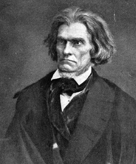

|

|

|
|
|
John Caldwell Calhoun was born on March 18, 1782, in the
Ninety-Sixth District of South Carolina to Patrick Calhoun
and Martha Caldwell Calhoun. Educated at Yale and Tapping
Reeves law school in Litchfield, Connecticut, Calhoun became
engaged in politics early in his professional life. His
vocal opposition to England in 1807 gained him a seat in the
South Carolina legislature and election to the United States
Congress in 1811. He later served as James Monroe's
Secretary of War and as Vice President to both John Quincy
Adams and Andrew Jackson (1824-1832). He resigned the Vice
Presidency in 1832 and was selected United States Senator
from South Carolina based on his opposition to a federal
tariff. In 1843, he retired from the Senate to work on his
South Carolina plantation. He returned to public life in
1844 to become John Tyler's Secretary of State and in 1845
he reentered the Senate maintaining his seat there until his
death in 1850.
Throughout his career, Calhoun championed the interests
of the slaveholding class of South Carolina. During the
1810s, the interests of South Carolina lay in tariff
protection and government-funded internal improvements.
Thus, Calhoun's early political career marked him as an
economic nationalist. By the 1820s, however, the situation
had changed. The slave-cotton culture in the South no
longer benefited from tariff protections and Calhoun saw the
import duties of 1828 as a means to foster primarily
Northern industry at the expense of Southerners. These
policies, in his view, were wrong for his state region and
unnecessarily divided the nation. In Exposition (1828), he
launched an attack on the tyranny of majority rule and
sought to create an institutionalized form of compromise,
"nullification," which he felt would protect minority
interests in national politics by allowing states to nullify
Federal laws with which they disagreed. In his 1831 "Fort
Hill Address," he argued for creating protection for
political minorities articulating the concept of the
"concurrent majority." This plan proposed that the various
economic interests of the United States should be given
proportional weight in national governance.
Throughout the 1830s and 1840s, Calhoun's fears that
Northern industrial interests, codified in a free labor
ideology and expressed politically through majority will,
would soon call for emancipation, shaped his political
agenda. He was consumed by the desire to unify the
slaveholding states under his direction in an effort to
protect slavery and champion their economic interests.
During the debates following the war with Mexico, Calhoun
worked against the Wilmot Proviso and strongly opposed any
plans that would abolish slavery in the territories. During
the late 1840s, he dedicated himself to confirming Southern
unity. He became increasingly concerned that the entire
North, not simply the radical parties such as the Free
Soilers and abolitionists, stood in opposition to Southern
interests.
In the last years of his life, Calhoun penned two works,
The Disquisition on Government and The Discourse
on the Constitution, that are still considered classic
expositions on American politics. Shortly before his death,
Calhoun vehemently opposed the Compromise of 1850, writing
that disunion was "the only alternative, that is left to
us."
Calhoun died March 31, 1850.
Source: Malcolm Rohrbrough, ed. Facts on File Encyclopedia of American
History: Expansion and Reform, 1815 to 1855 (New York: Facts on
File, 2003), 62-64.
|